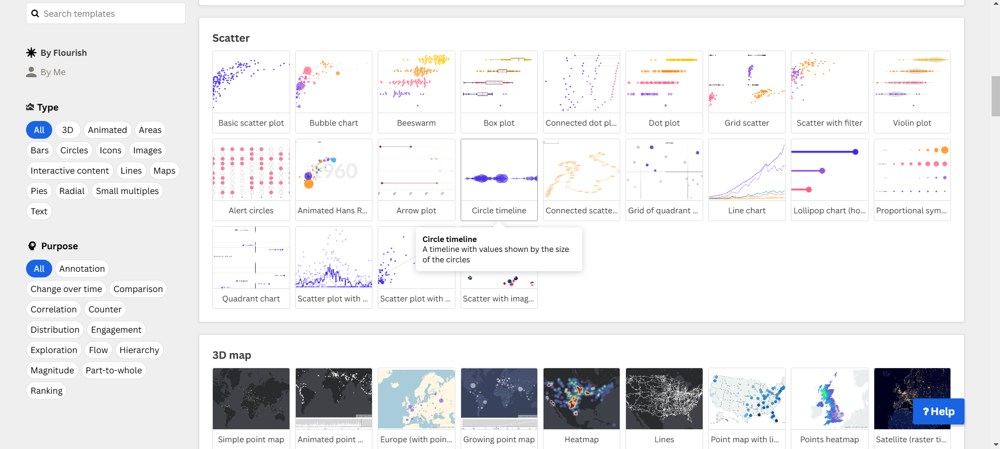
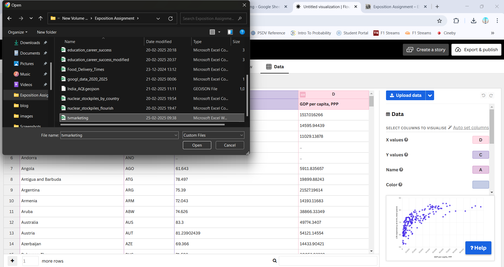
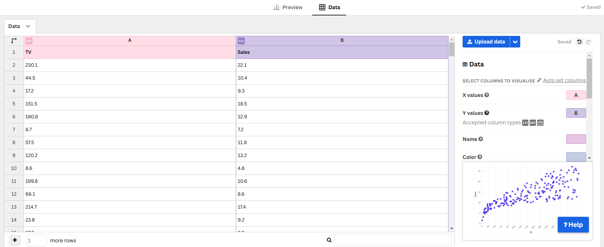
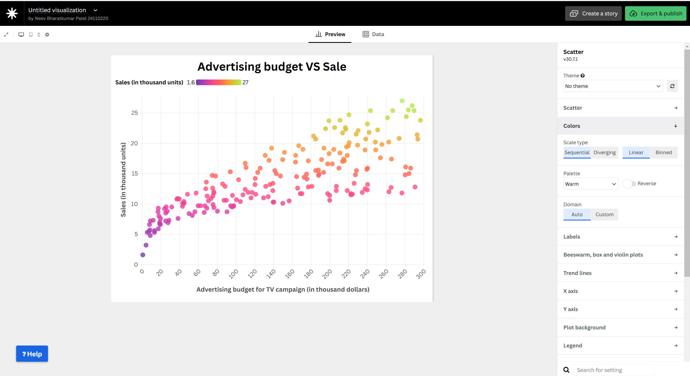
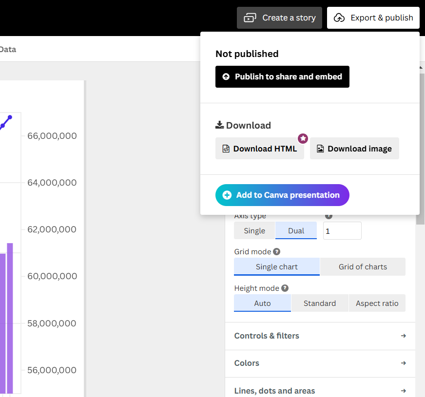

Scatter Plot: Advertisement Budget vs Sales
Scatter Plot: Advertisement Budget vs Sales
This document provides a step-by-step guide to creating a Scatter Plot to visualize the relationship between advertisement spending and sales performance.
Step 1: Open the template of Scatter Plot in Flourish

- Search and click on the template of Scatter Plot in Flourish.
Step 2: Upload Data to Flourish

- Go to Flourish.
- Create a new visualization and select Scatter Plot.
- Upload the CSV file you downloaded.
Step 3: Configure the Chart

- Set Advertisement Budget on the X-axis.
- Set Sales on the Y-axis.
- Adjust the scale if necessary.
Step 4: Customize the Design

- Choose a color gradient to represent different sales values.
- Add labels and tooltips for better readability.
- Adjust dot size and transparency for clarity.
Step 5: Publish and Embed

- Click “Publish & Export” in Flourish.
- Copy the Embed URL.
Final Scatter Plot
Importance of Scatter Plots
- Helps identify correlations between advertisement budget and sales.
- Highlights outliers and potential trends in the data.
- Useful for predictive analysis in marketing strategies.
This guide provides a structured approach to creating a Scatter Plot that visually represents the impact of advertising on sales.